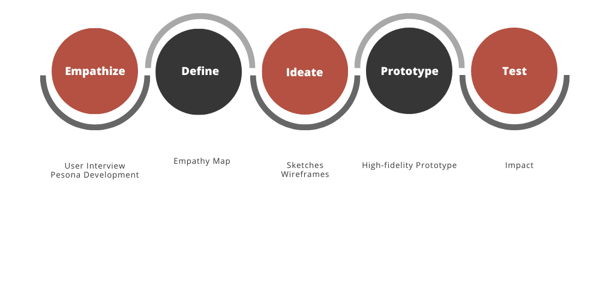

My Process:

1. Empathize:
User Research
Colourette utilize several online e-commerce platforms to widen their online presence. They are most widely utilized in
Shoppe and Lazada because of the great customer service. I believe customers will engage more in the main site of
Colourette if the navigation and overall look will be improved to a more intuitive and refined experience since it is
still much easier to see the full range of products on the main website.
I wanted to learn more what shoppers look for
on shopping on a cosmetics site. I conducted observations and interviews on my friends that often do online shopping
when they’re stressed. Their feedback allowed me to gain a deeper understanding of the shopper’s thoughts and
behaviours.
My main takeaways from the Observation are:
- In buying cosmetics people go for something that they think will looks good on them based on the models that depict the shade and color of what the product is
- Before buying products people look for reviews
- People often utilized the search function more than scroll through dozens of products to look for something they want. They want something fast and easy to use checkout and look for items that often is on sale.
From my findings, I constructed a persona, Celeste, to help me understand how can I help
our users to achieve their goals
using certain features of the app.
2. Define:
Brainstorming
I started to brainstorm ideas and created POV and How Might We Statements from the
Insights and Empathy Map.
How might we help Celeste feel relaxed and happy during their shopping journey?
- Make the navigation more aesthetically appealing to our customers
- Focus more on Bigger pictures that shows what the product look on the lips and second on the color and shade of
lipstick
- Simplify navigation and product page and make it more concise and intuitive
- Providing esasy and fast checkout by upgrading the cart page
- Optimizing search function
3. Ideation:
Sketches and Wireframe
I started to visualize my idea for the changes in the problem areas of the website using pen and paper and later
moved on to creating high-fidelity wireframes using Figma.
Changes in the Features of the Website
Homepage
Products and Main Navigation
Product Description
Cart
UI
The UI is kept to have a neat and simple design. I maintained the classic black and white color combination of Colourette and added a pop of red to highlight important
information.
4. Prototype:
See high-fidelity Figma prototype here.
5. Test
Impact
The redesigned Colourette site was also well received to a few users who tested for the site. They said it was more
improved than the current one and users will be much more satisfied with it especially people who are far-sighted since
the layout of the site is much more bigger and emphasized now. They said it is simple yet loud and informative. The
intuitiveness of it also encourage the users to buy more.
Reflection
I wanted to make three projects to showcase my UX Design skills and I'm glad I made a decision to include a web redesign
from the users pain points of an e-commerce site. It made me more aware of the shoppers insight, thoughts, and feelings
when shopping and I learned a lot of concepts that comes with the psychology of e-commerce.
Next Steps
Usability testing gave me a few ideas to improve the app and use it on Ideation version 2 such as:
- To add the ingredients of the product on the product page - one of my users suggested this as some users read this to
know if they have an allergy on some of the igredients.
- To add Caution statements if there's added ingredient that users are more allergic of.


{kind=link}
{kind=link}